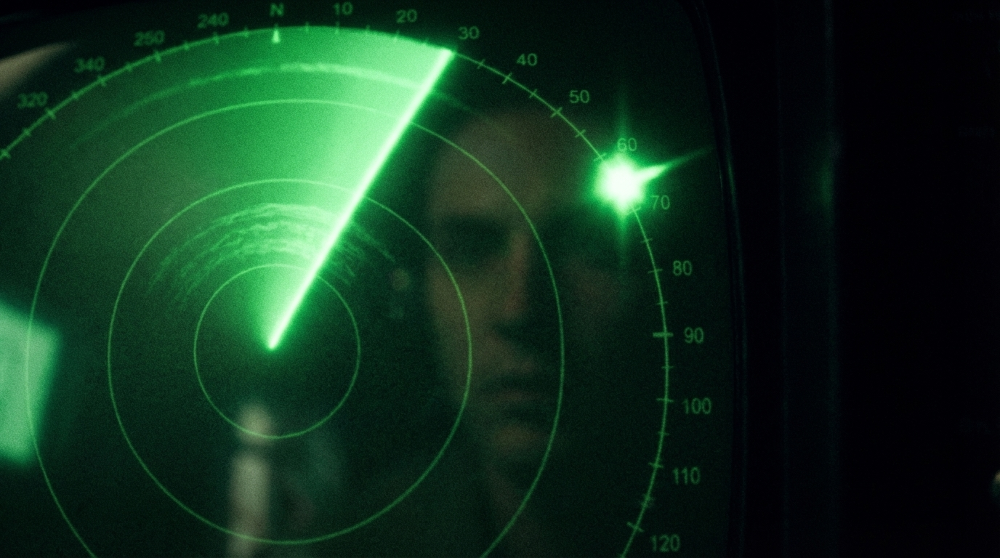

Wherever there are nuclear weapons, there are reports of unidentified objects in the sky. Not occasionally. Not anecdotally. Consistently, across decades, across continents, from witnesses with no contact with one another and no apparent reason to fabricate.

Montana, 1967
Malmstrom
In 1967, security teams at Malmstrom Air Force Base in Montana — a remote installation on the northern Great Plains that housed Minuteman intercontinental ballistic missiles, each carrying a nuclear warhead — reported a glowing red object hovering near the missile silos. While they watched, ten missiles simultaneously went offline.
The missiles were housed in separate, hardened underground launch facilities. They were not connected to each other in a way that a single malfunction could take them all down at once. A subsequent investigation could not determine the cause. The incident was classified for decades and only entered public discussion when the officers involved testified about it under oath.
At Minot Air Force Base in 1966, deputy missile commander David Schuur described an object surveying the facility and hovering over each silo sequentially, causing erratic indications on each missile as it passed. Sequential, targeted — the signature of a system actively probing rather than passively flying overhead.
In 1980, military personnel at RAF Bentwaters near Rendlesham Forest in Suffolk, England, reported a close encounter with an unidentified craft over several nights. The base was a NATO facility that, though it was never officially acknowledged, was widely understood to store tactical nuclear weapons. Deputy base commander Lieutenant Colonel Charles Halt filed an official memorandum to the British Ministry of Defence describing the events. Elevated radiation readings were recorded at the landing site.
Logged
Between 1948 and 1950, the Sandia nuclear weapons facility in New Mexico — the site where American atomic bombs were assembled — logged 209 separate reports of unidentified aerial phenomena.
Two hundred and nine reports. At a single facility. In three years.
In 1979, a United States Vela surveillance satellite — designed specifically to detect nuclear detonations — recorded a characteristic double flash over the South Atlantic, near the South African coast. Most independent analysts assess it as a clandestine nuclear test, likely conducted jointly by South Africa and Israel. The Afrikaner government said nothing. The incident has never been officially explained.
But it confirmed what intelligence services already knew: South Africa had nuclear weapons.

By May 1989, that nuclear capability was at its peak. Six gun-type nuclear devices had been assembled at a facility near Pretoria. Vastrap — coordinates 27°46'S / 021°28'E — the test range in the Kalahari, had two underground shafts drilled in 1977 for nuclear weapons testing — one 216 metres deep, the other 385 metres. They had been detected by Soviet reconnaissance satellites and shut down under joint American and Soviet diplomatic pressure, but the shafts remained, the warheads existed, and the testing infrastructure was intact. According to David Albright's research drawing on South African official sources, there was an attempt to reactivate the site for testing in the late 1980s — a shed was built over one of the shafts to conceal the activity, and water pumped out in preparation was secretly hauled away. The attempt was detected by Western or Soviet intelligence, triggering urgent diplomatic pressure that accelerated the dismantlement programme.
In April, May, and June of 1989, the RSA-1 and RSA-3 — South African ballistic missile programmes developed in partnership with Israel — were in an active sixty-day testing corridor across the Northern Cape. The Overberg Test Range, a missile and rocket testing facility on the southern coast near Bredasdorp, was operational. The Alkantpan ballistic testing range, further north, was firing. Israeli engineers from Israel Aerospace Industries were on South African soil, embedded in the weapons development programme. Two months after the alleged crash, on 5 July 1989, US officials confirmed that a booster rocket launched from the De Hoop test range on the southern coast had a 900-mile range — similar to the nuclear-capable Israeli Jericho missile. The Overberg Test Range on the southern coast mirrored the layout of the Palmachim launch site south of Tel Aviv with a precision that could only reflect shared engineering.
Verified Infrastructure — The Institutional Context
- Vastrap nuclear test shafts: real, verified by satellite imagery and declassified US intelligence
- Reactivation attempt late 1980s: documented by David Albright/ISIS from SA official sources
- RSA-1/RSA-3 weapons testing corridor: documented, surrounding the May 1989 crash date
- De Hoop booster (July 1989): confirmed 900-mile range, nuclear-capable profile
- SAS Tafelberg: real SANDF vessel, confirmed classified intelligence-gathering operations
- 1975 ISSA Pact (Peres-Botha): confirmed, established covert military cooperation framework
- Overberg-Palmachim mirror layout: confirmed by satellite analysis — shared engineering
- Kentron-IAI Harpy drone: confirmed first test 1989, electromagnetic warfare technology family
- ISC/Armscor/CIA covert pipeline: documented in US court records, November 1989
- AARO 2024: confirmed deliberate US government UAP disinformation campaigns
- AEC institutional doctrine: employees instructed to lie to IAEA inspectors. Valindaba policy
The Kalahari Desert was the most weapons-test-active stretch of land on the African continent.
Nuclear warheads in storage. Missile testing corridors open. Directed-energy research underway. Foreign military engineers on site. If the nuclear-site pattern documented at Malmstrom, Rendlesham, and Sandia is genuine — if unidentified phenomena are drawn to nuclear activity — then the Kalahari in May 1989 is exactly the kind of location that pattern predicts.
The Vastrap test range itself was one of the most classified facilities in the country. Located near Upington in the Northern Cape, it was where the Afrikaner government intended to conduct underground nuclear detonations. Two shafts had been sunk into the desert floor in 1977 — one 216 metres deep, the other 385 metres — before Soviet reconnaissance satellites detected the preparations and triggered a joint US-Soviet diplomatic intervention that forced the tests to be called off. The shafts were sealed but never filled. They remained in the sand, along with the support infrastructure, the security perimeter, and the institutional memory of what they had been built for.
By 1989, South Africa had six completed nuclear warheads but no political will to test them underground. The shafts sat in the desert like loaded guns with the safety on. And according to the documents, something fell out of the sky directly into the middle of it all.
The fused sand described at the Kalahari crash site is a physical detail that either originated from observation or from someone familiar with the literature of ground trace cases. Soil vitrification — sand or earth being heated to the point where it turns to glass — has been reported at alleged UAP landing sites on multiple continents. The most studied case is the Trans-en-Provence incident of 1981, where French government researchers from GEPAN, the official French UAP investigation body, documented measurable changes to the soil at a reported landing site. The detail in the Kalahari documents is consistent with this pattern. It is also consistent with what would happen near the detonation point of a nuclear device or a high-energy directed weapon — which is exactly the kind of ambiguity that makes this case so resistant to a clean verdict.

The Logical Problem
The Contradiction
This is the contradiction at the heart of the field. Researchers who study UAP accept the nuclear-site correlation as one of the most important patterns in the subject. It is cited in congressional testimony. It appears in Pentagon briefings. It is one of the most widely discussed threads in the entire history of the phenomenon.
And yet the Kalahari case — which maps onto that pattern more tightly than almost any other incident on record — sits untouched, because it was dismissed before anyone checked whether it fit.
You cannot accept the pattern everywhere else and reject it for the Kalahari without explaining why.
To understand why it was rejected, you need to understand what the world believed South Africa was in 1989 — and what it actually was.
Continue in Part 5 →